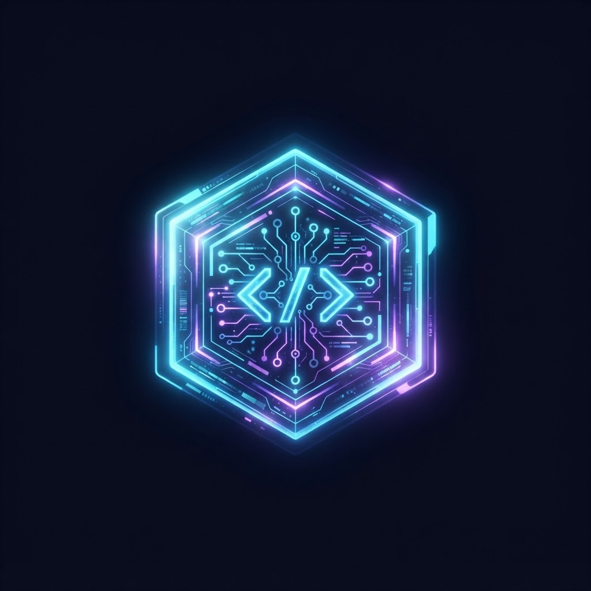

AssoVote
Conception d'une application de vote pour une association, de l'analyse du besoin à l'implémentation.
Voir sur GitHubDéveloppeur & Étudiant en Informatique — je conçois des applications modernes, robustes et pensées pour évoluer.
Étudiant en troisième année de BUT Informatique, je recherche une opportunité de stage ou d'alternance.
Je conçois des applications fiables et accessibles en m'appuyant sur une démarche structurée : comprendre le besoin, modéliser la solution, développer proprement et valider le résultat.
Mes projets universitaires m'ont permis de travailler en équipe, de gérer des données, d'optimiser des algorithmes et de découvrir les contraintes d'un projet informatique de bout en bout.

Consultez mon CV directement en ligne, sans téléchargement.
➜ Voir mon CV en ligneQuelques réalisations universitaires qui illustrent ma façon de travailler. Les liens GitHub et démos pourront être ajoutés lorsque les dépôts seront publiés.
Conception d'une application de vote pour une association, de l'analyse du besoin à l'implémentation.
Voir sur GitHubProjet d'exploitation de données sportives avec modélisation, requêtes et restitution des résultats.
Voir sur GitHubMise en place et analyse d'un environnement système communicant dans le cadre des SAÉ.
Voir les tracesCette section sera complétée avec mes expériences, missions et réalisations en entreprise.
Poste : à compléter
Entreprise : à compléter
Missions : à compléter
Période : à compléter
Consulter mon rapport de stageSix compétences travaillées au fil des projets. Cliquez pour découvrir le détail et les traces associées.